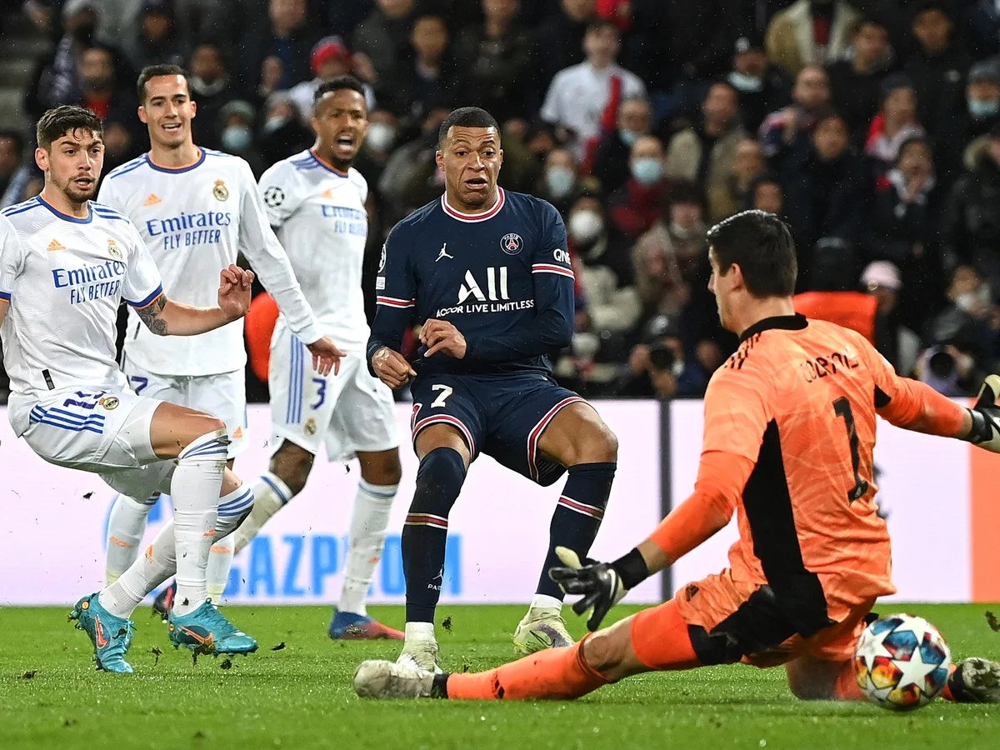
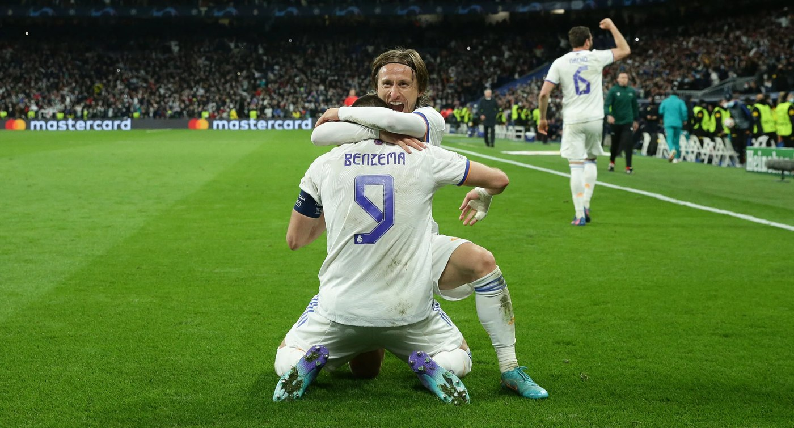
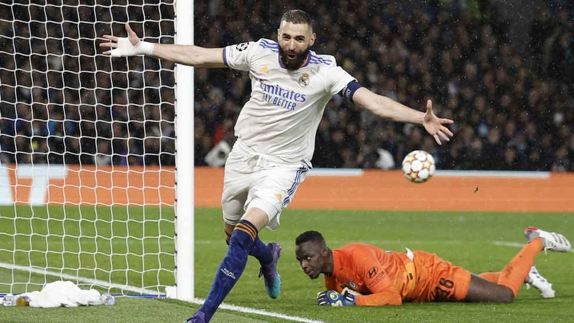
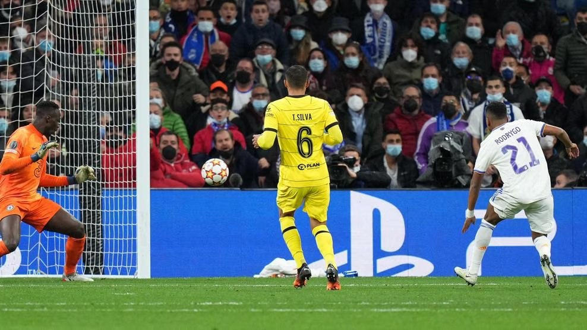
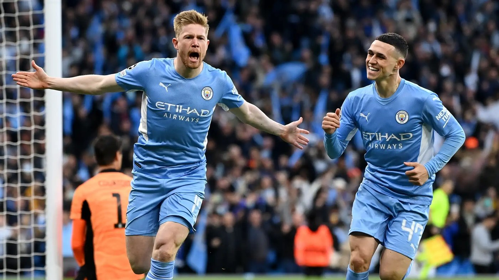
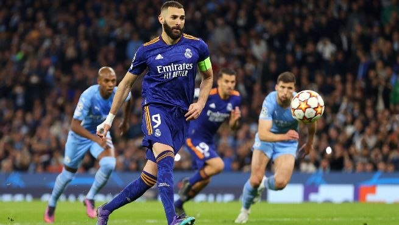
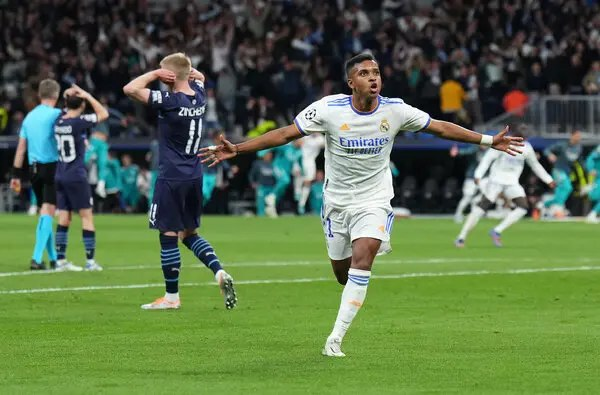
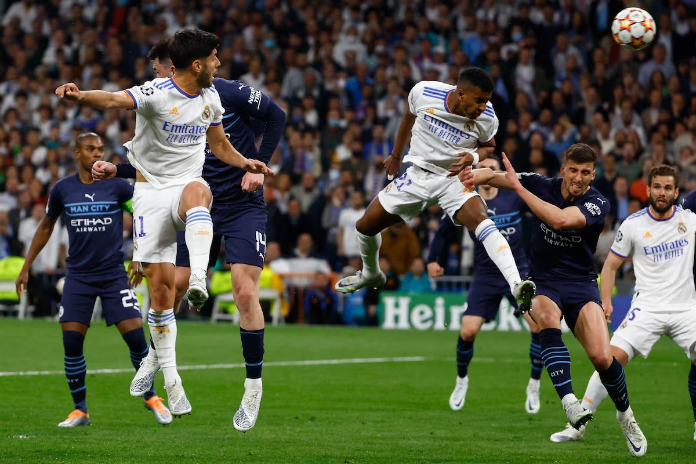
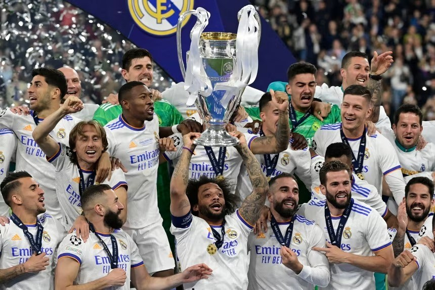
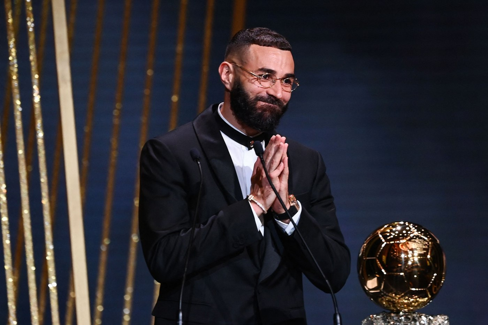

The Second Ancelotti Era in Real Madrid
Real Madrid had 3 seasons which were not to the standard of Real Madrid during 2019-2021. Specially compared to the 3 previous years in which Real Madrid won the Champions League 3 times in a row. There were many new signings during the era post Zidane in 2019. However, most of these signings seemed not to work, players such as Mariano Diaz, Luka Jovic, and Eden Hazard. These signings are seen as a complete failure, but there were also other players which although didn't have a great impact at first were able to develop into impactful players.
Vinicius jr, Fede Valverde, Rodrygo Goes: from failure to greatness
2019-2021 was marked by the 2nd short era of Zinedine Zidane back in Real Madrid. Zidane came back 10 months after his first term, after the Ajax game at the Bernabeu in 2019. Zidane was able to see talent were others couldn't. The press saw the signing of Vinicius and Rodrygo as unsuccessful. Many considered Valverde as a worse player compared to Marcos Llorente. Zidane decided to keep Valverde and for Real Madrid to accept the offer from Atletico Madrid. He decided knowing that if Llorente developed as a better player he would be criticized heavily for letting a Spanish talent go for a potential Uruguayan player that could be transferred in the next transfer window. Zidane was right, and although he only won a league title (19/20) and a Supercopa de España (2020) he was able to prepare the new young talent that he believed in, develop.
Ancelotti 2022
Ancelotti would be transferred from Everton to Real Madrid. Even with the history of Ancelotti his signing was not seen as positive as he was managing a club that fights to stay in the middle of the table. Ancelotti is a historic manager and as a Real Madrid manager, he is the manager that won La Decima (Real Madrid's 10th Champions League title). Some believed others didn't, the dream was always the Champions League, but it seemed really far away. Compared to Real Madrid teams such as PSG, Manchester City, Bayern Munich, Chelsea, and Liverpool were really strong.
During the season Real Madrid didn't have as much trouble domestically. In 21/22 Ancelotti formed his starting IX in 4-3-3 formation. The starting Goalkeeper was Courtois who had been a solid goalkeeper since his signing in 2018. Although it was controversial at the time because Santiago Solari and later Zidane both decided that Keylor Navas who won the 3 consecutive Champions Leagues should not be the starter goalkeeper. The defense was formed by Dani Carvajal in the right back position, Militao and Alaba as the center backs and Ferland Mendy as the left back. This defense although it didn't have great control of the ball, it was a very solid defense. Militao, Alaba, and Ferland Mendy acted as immovable rocks in defense as it was very difficult to get past them, while Carvajal was usually the more offensive defender. The defense wasn't as important in the when the ball was in possession as it was not needed. The midfield was formed by the same trio that won the 3 consecutive Champions Leagues. Casemiro as the defensive midfielder who was mostly defensive supporting the defense and acting as a midpoint between Toni Kroos and the defense and Modric with the attack. Toni Kroos as the midfielder who handled if the attack should progress fast or slow. Lastly, Luka Modric who would be able to progress with ball to create dangerous chances near the opponents box. The attack was also quite clear. Vinicius Jr was the starter left winger and although he didn't score as often he was able to make the opponents right back crazy and often needed the support of a midfielder for support. Benzema was the starter striker who was scoring more goals after Cristiano Ronaldo left in 2018. The only disputed position was the right winger between Rodrygo Goes and Fede Valverde depending on what each match demanded. Rodrygo was used when Real Madrid played against defensive teams that weren't going to create many chances. Valverde played as a progressive midfielder who would defend supporting the defense while transitioning to attack with his pace, he was a starter against big teams that would likely have the possession of the ball more than Real Madrid because of Ancelotti's style and tactics. This was the starting lineup if there were no injuries, or a sanction.
Champions League Round of 16 — Real Madrid vs Paris Saint-Germain
Real Madrid would finish first in their group meaning that they are more likely to have a more accessible opponent in round of 16. This was not the case for Real Madrid as PSG and Manchester City were both in the same group, PSG would end second of their group. In the round of 16 draw Real madrid would face the PSG of Mbappe, Neymar and Messi. Automatically the alarms went on in the Spanish media as Real Madrid was seen as inferior to PSG. The first leg would be played at the Parc des Princes in Paris and the second leg at the Santiago Bernabeu. The second leg being played at home is of huge help as in the first leg only 90 minutes are played while in the second leg you already know how you must play to win, have your fans supporting you, and the match can last 90 minutes, 90 minutes + 30 minutes of extra time if the game across both legs ends on a draw, and if the score persists in a draw the match will be decided on a penalties all in the second leg.

The 1st leg would end 1-0 in favor of PSG with a goal from Mbappe. Real Madrid fans felt that they were saved. As the score difference could have been much greater as Messi's penalty was blocked by Courtois and there were many other chances that PSG didn't take an advantage on. The second leg which is where the magic started, Mbappe showed that he was the best player in the world. There was simply no way to stop him, he was really fast, maybe even too fast. In that game Messi and Neymar left Mbappe alone. Mbappe would score the 1-0 in the match to make it 2-0 in the aggregate score and it seemed like he wouldn't stop. The only positive aspect that Real Madrid fans could think of is this player is going to play for us next year, and that the elimination was imminent. Until, in a moment of seconds Benzema pressures Donnarumma who is forced to do a bad pass, which gets to Vinicius who passes it back to Benzema who scored the 1-2. Now it feel different the Bernabeu chanting "yes we can". In the 75th minute Modric filters a pass to Vinicius for him to run with the ball on the opponents box, he finds Modric who then filters a pass to Benzema, this Benzema does not miss these and he scores his second goal to equal the score. Two minutes later a pass is filtered to Vinicius again, who is unable to keep the possession as Marquinhos tries to pass it to a teammate, the ball instead reaches Karim Benzema who then as act of magic scores a hattrick against the PSG of Mbappe, Neymar and Messi winning the knockout stage by 3-2 (aggregate.)

Champions League Quarter Final — Real Madrid vs Chelsea

Real Madrid would have to go against Chelsea the former Champions League winners, the first leg was played in Stamford Bridge and the second leg at the Santiago Bernabeu. The first game against Chelsea was amazing, Benzema scored another hattrick which gave Real Madrid a strong advantage going into the second leg, also Courtois saved many chances made by Chelsea with a remarkable save against Azpilicueta. Kai Havertz would score 1 goal in the 40th minute. The second leg was not as expected, as it seemed that Chelsea showed more hunger which led to a Mason Mount goal in the 15th minute, a Rudiger goal in the 51st minute, and Timo Werner 75th minute. At that moment the score was 3-4 in favor, it was an embarrassment to possibly be eliminated this way. Ancelotti had to make offensive changes, the most important one was Rodrygo who substituted Fede Valverde. In the 79th minute Modric sends a perfect trivela cross to Rodrygo scores to make it 4-4. In extra time with the 96th minute during extra time, the ball reaches Vinicius and he crosses the ball to Benzema who scores to make it 5-4 on aggregate. The score would stand and Real Madrid would be back at a new semifinal of the Champions League.

Champions League — Manchester City

Real Madrid would go against Manchester City in the semifinal, the Manchester City of Pep Guardiola which was filled with amazing players such as Kevin De Bruyne, Mahrez, Foden, Gabriel Jesus, Bernardo Silva, and Rodri. The first leg would be played at the Etihad while the second leg would be played at the Bernabeu. The first leg would start with a goal by Kevin De Bruyne in the 1st minute. Then Gabriel Jesus would score the 2nd goal for Manchester City in the 11th minute, it felt like the Real Madrid dream was over. Then Benzema with the impact of a player that deserves the Ballon d'or scores from a cross from Mendy from a difficult angle that only he could score from. Then the comeback felt even further away as in the 54th minute Phil Foden would score to make the game 3-1. A minute later Vinicius Jr would do a skill of a Brazilian crack. Mendy would pass him the ball and bait the Manchester City defender Fernandinho thinking that Vini was going to stop the ball. Instead Vini left the ball keep going and he would use his pace to reach the ball after it went through Fernandinho's legs. Vini would use his pace to outrun the defenders and score in a play only he could make. the score was 3-2 in favor of Manchester City until when Bernardo Silva used an occasion in which Madrid player thought the referee was going to stop the play and Bernardo took the ball and shot an impossible shot to save on Courtois. The score was 4-2, a comeback with this score was still possible but also difficult. In another play involving a cross by Real Madrid the Manchester City defender Laporte committed a terrible mistake as when he jumped he left his arm up, the ball touched his arm and a penalty was called by the referee. Then it was up to Benzema to keep the streak going or going back to Madrid in a 2 goal disadvantage against the best team of the Champions League at that point. Benzema decides to do what top players do, he does a Panenka, the ball goes into the net slowly as Ederson (City goalkeeper) dives and sees the ball go in as he can't do anything anymore. The score is now 4-3 in favor of Manchester City, but it felt that at that moment Real Madrid had won. Benzema would state that the second leg would "una noche magica" a magical night at the Bernabeu.

El Real Madrid — Manchester City vs Real Madrid, second leg, Champions League 2022
Una Noche Magica En El Bernabeu it was. Ancelotti would start with the starting lineup that was used throughout the season with Valverde starting over Rodrygo. For 70 minutes the Bernabeu would be chanting "si se puede" yes we can for 70 minutes, Real Madrid would create chances during those 70 minutes without luck. In the 73rd minute it seemed that the dream was over, Mahrez scores... It seemed that Real Madrid would fall before the final. Ancelotti had subbed in Asensio, Camavinga and Rodrygo it was all or nothing. Jack Grealish would have a clear chance for Manchester City as the ball goes past Courtois, Mendy saves it from the line with the rest of energy he has. Also, in another chance for Manchester City, Courtois saves a ball with the bottom of his cleat. It was more likely for Manchester City to score the second goal of the game than Real Madrid coming back. It was now the 88th minute, it was in possible 2 goals, Real Madrid had been at a score disadvantage since the first minute at the Etihad, 180 minutes with Real Madrid being behind, the dream was over. It would be over for any other team, not for Real Madrid.
First Rodrygo goal (minute 90)
— Carlos Martinez

Second Rodrygo goal (minute 91) — Miracle (2-1)
— Carlos Martinez

Real Madrid would take the game to extra time, the score was 5-5 on aggregate. In the 95th minute during extra time Ruben Dias would tackle Benzema inside the box, the referee calls that the play was a penalty. Now it was on Real Madrid's hands to win the game. To be ahead of Manchester in the score line for the first time. Benzema who was already seen as a clear Ballon D'or contender offers the ball to Rodrygo as nothing had gone his way that day. Rodrygo respects Benzema and his hierarchy, Benzema would be shooting. Benzema shoots right and Ederson dives left, Benzema scores and makes it 3-1. There would a chance from Fernandinho for Manchester City which was close, Real Madrid would play defensively and win 6-5. It was the time to play a Champions League final once again, it was the time to win the 14th.
Champions League Final 2022 — Real Madrid vs Liverpool
At the Stade de France in Paris, Real Madrid will be facing Liverpool. This was the chance for Real Madrid to win their 14th Champions League and for Liverpool to get revenge from Champions League Final 2018. Liverpool started the match strongly, creating many chances on Real Madrid. That day Courtois became known as the best goalkeeper in the world by a large margin. There were many chances from Mane and Salah but Courtois was able to save all of their chances. Just before halftime, Benzema scored, but the goal was ruled offside by VAR.
The second half continued to be competitive, but Real Madrid was able to open the score. In a play in the 59th minute Valverde on the right wing shoots, the shot goes wide, but in luck of Vinicius he is able to reach the ball and score to give Real Madrid the lead. Liverpool continued to attack and tried to reach an equalizer, but Courtois was always there.
Real Madrid were able to defend their advantage until the final whistle from the referee. Real Madrid were Champions of Europe for the 14th time in their history. Vinicius scored the goal of the final, Courtois was named the Player of the Match with his nine saves, Benzema scored 15 goals putting him only behind Cristiano Ronaldo in goals in a season. Ancelotti became the first coach to win the competition 4 times (as a coach).

Real Madrid won of, if not the hardest Champions League. Real Madrid won against the PSG of Mbappe, Neymar, and Messi, won against the previous Champion Chelsea, won against the best club in England the Manchester City of Pep Guardiola, and won against the Liverpool of Jürgen Klopp. They all featured epic comebacks and individualistic masterclasses. Courtois amazing saves, Benzema's goals, Vini's ability to destroy defensive systems, and the goals of Rodrygo against Chelsea and Manchester City. Benzema would be awarded as the Ballon D'or winner for his incredible season.
